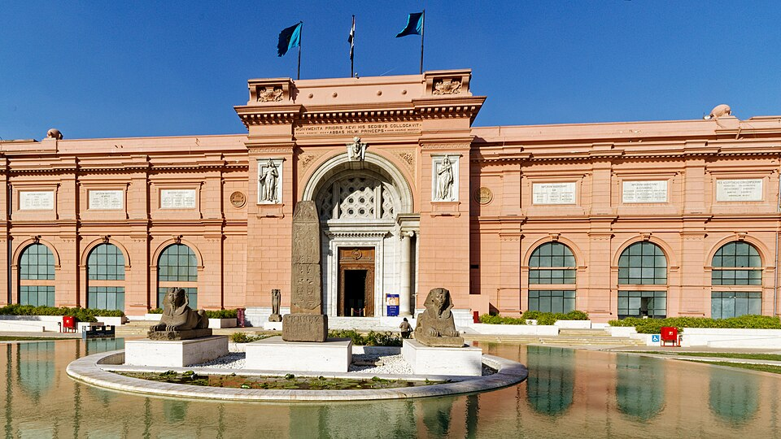
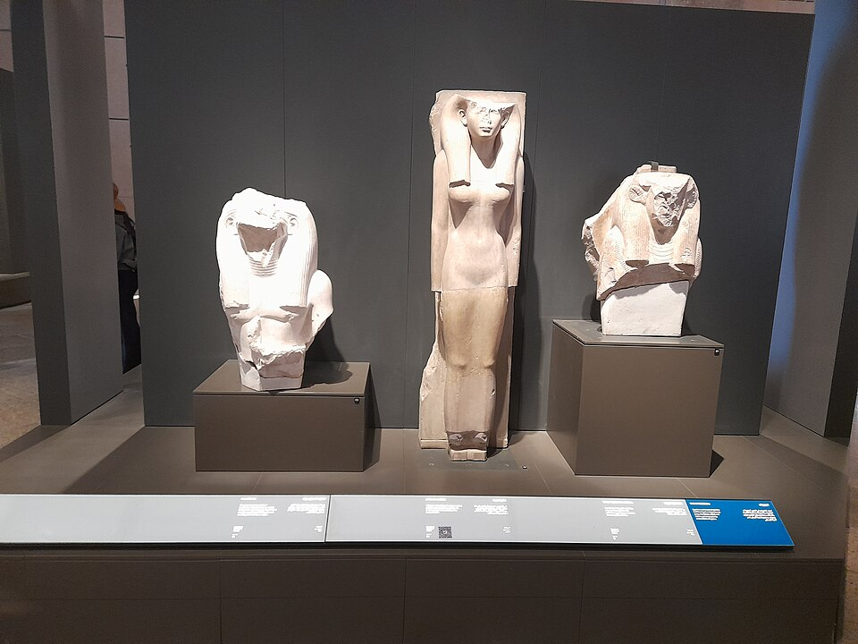
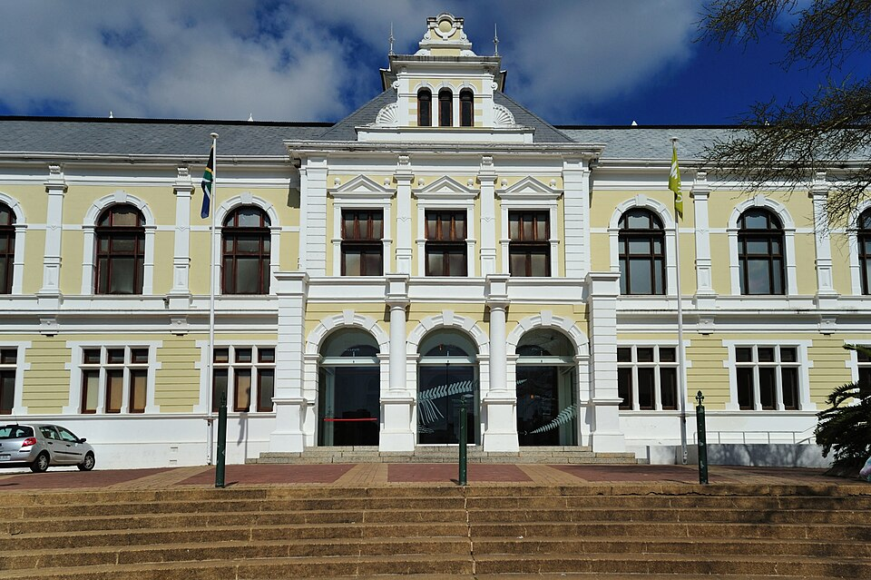

Древние цивилизации и культурное наследие чёрного континента

Один из важнейших археологических музеев мира, основанный в 1858 году. Хранит более 120 000 экспонатов Древнего Египта, включая золотую маску Тутанхамона и мумии фараонов.
Сайт музея
Крупнейший в мире музей, посвящённый одной цивилизации. Открыт в 2024 году у подножия Великих пирамид. Более 100 000 экспонатов, включая полную коллекцию Тутанхамона.
Сайт музея
Расположен в историческом здании в Саду скульптур. Коллекция включает более 1,5 миллиона природных, социальных и культурных экспонатов Южной Африки — от скелетов динозавров до бусик Сан.
Сайт музея